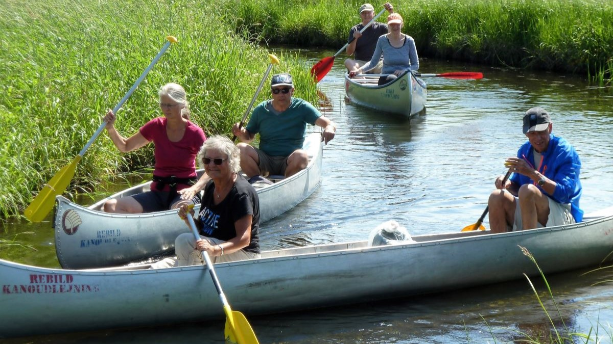
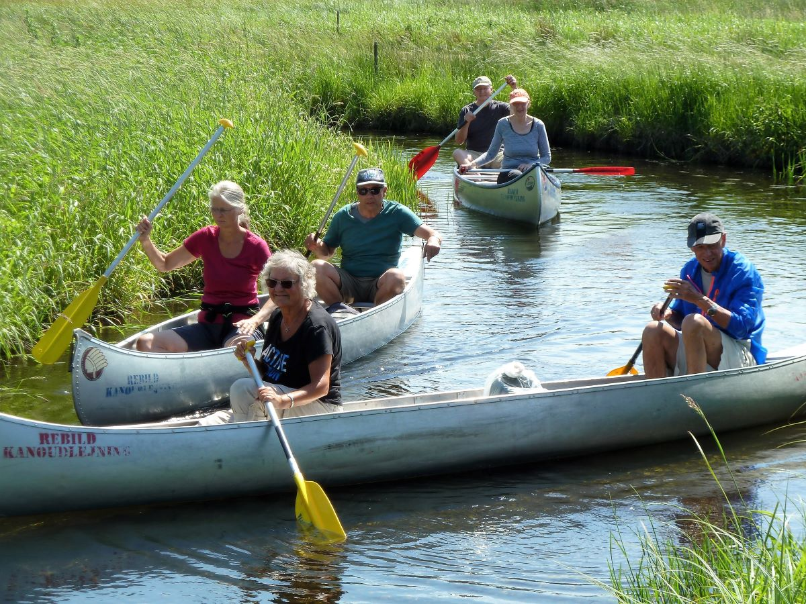
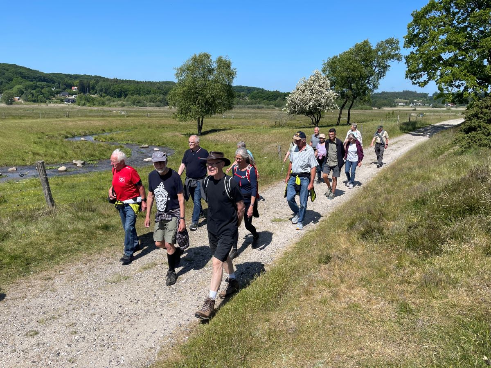
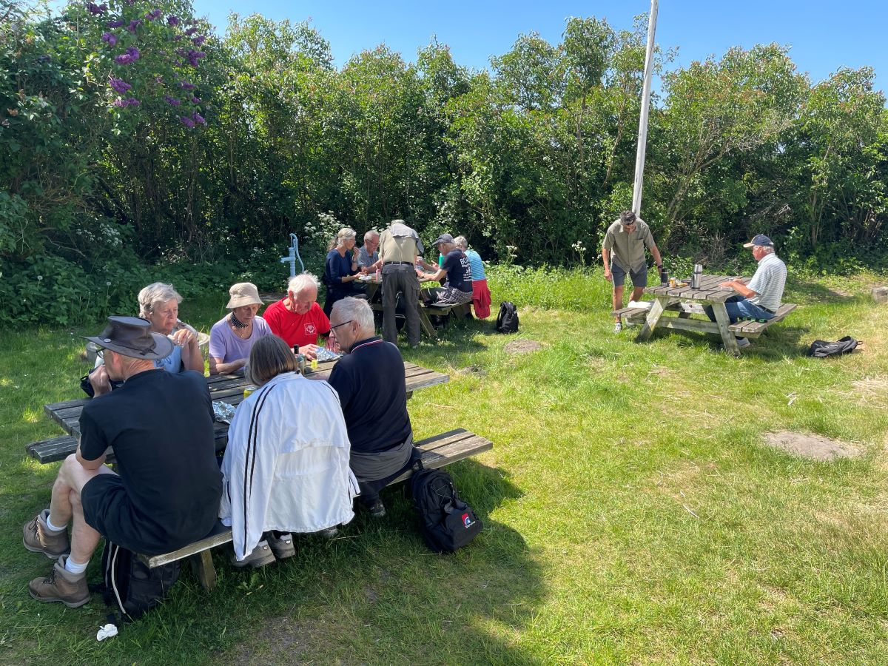

Senior
Senior træning mødes den første mandag i hver måned (undtagen juli og august) i tidsrummet 10-13:00, hvor vi går en tur. Som regel et sted i Rold Skov, hvor der er flere af seniorerne der er gode for en spændende historie undervejs, men vi har også været i Aalborg for at se gavlmalerier, på besøg i Klosteret og sejlet i kano på Lindenborg Å. Undervejs på turen stopper vi og spiser den medbragte madpakke - mens snakken går livligt. Er du medlem af klubben, så er det ganske gratis at deltage, og vi garanterer nogle gode timer fyldt med naturoplevelser og røverhistorier.



